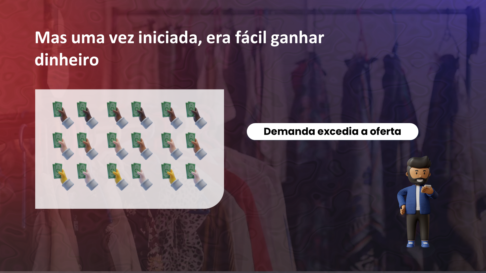
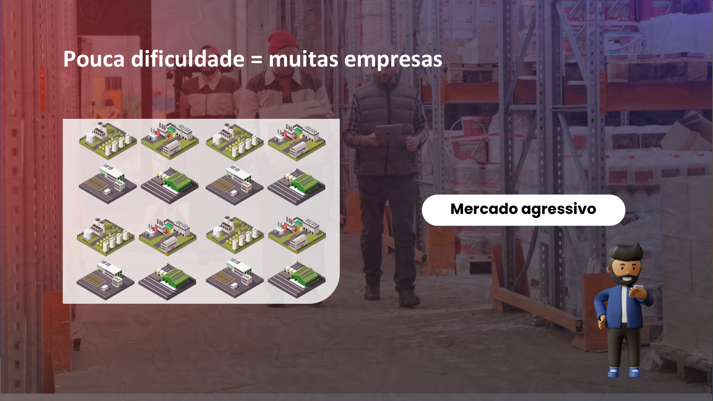
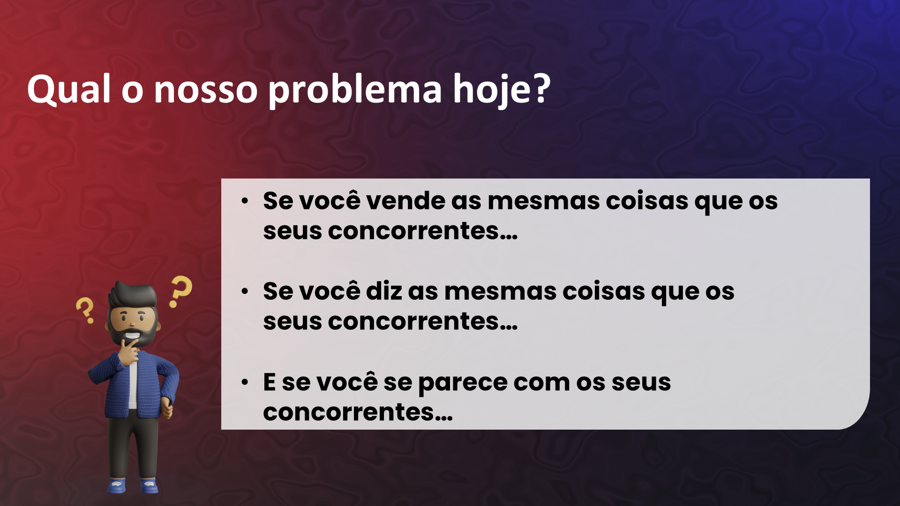
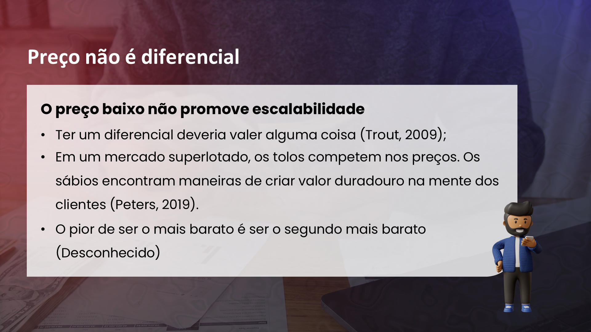
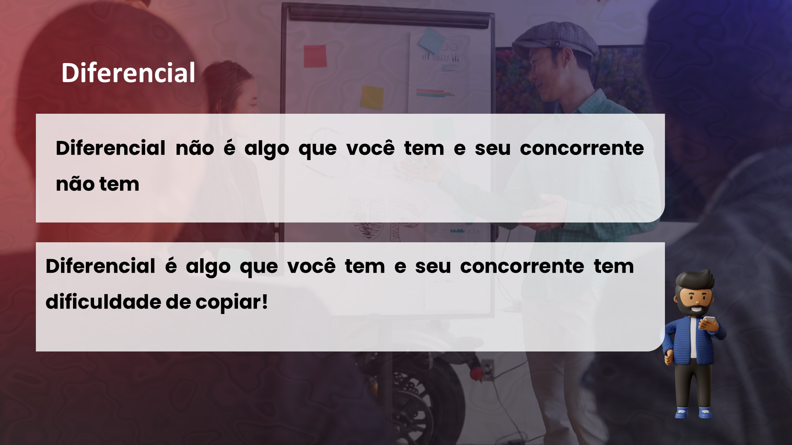
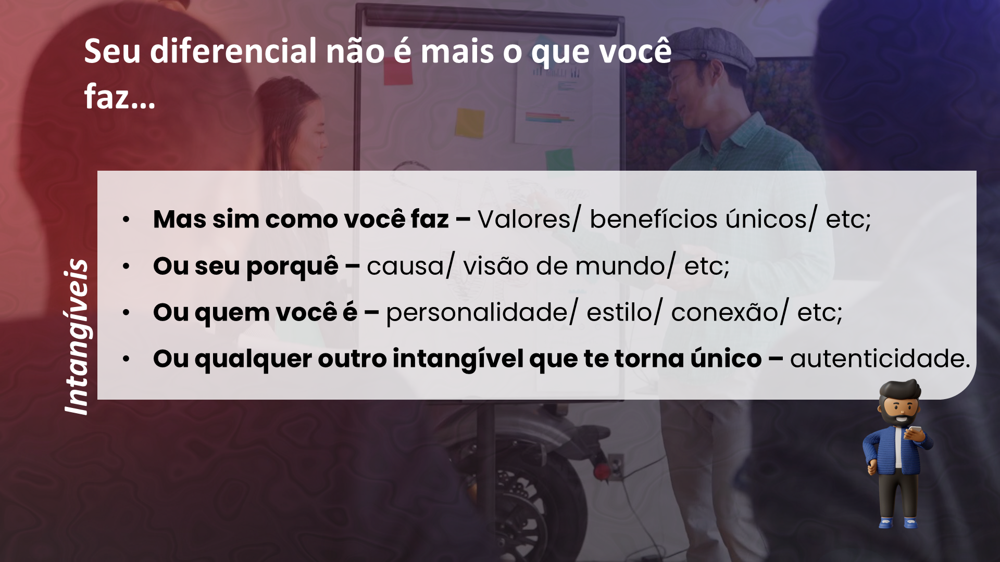

flowchart TB
A["Paradigma Produtivo"] -->|"Produzir mais e melhor"| B["Commodity"]
B -->|"Competição por preço"| C["Margens decrescentes"]
D["Paradigma de Marca"] -->|"Produzir com identidade"| E["Produto diferenciado"]
E -->|"Competição por valor"| F["Margens sustentáveis"]
style A fill:#ffcdd2
style C fill:#ffcdd2
style D fill:#c8e6c9
style F fill:#c8e6c9
1 Transformações do Mercado Agropecuário
O mercado agropecuário brasileiro passou por mudanças profundas nas últimas décadas. Compreender essas transformações é o primeiro passo para entender por que a gestão de marcas se tornou indispensável no agro.
1.1 O agro de ontem: quando produzir bastava

Durante boa parte do século XX, o agronegócio brasileiro operava sob uma lógica relativamente simples: quem produzia, vendia. A demanda por alimentos crescia de forma constante, impulsionada pelo aumento demográfico e pela urbanização acelerada. Nesse cenário, o principal desafio era produtivo, aumentar a área plantada, elevar a produtividade por hectare, mecanizar processos.
O produtor rural que investia em tecnologia e expandia sua capacidade produtiva era naturalmente recompensado. Não havia necessidade de se diferenciar no mercado, porque o mercado absorvia tudo o que era produzido. A concorrência existia, mas era limitada pela geografia, pela infraestrutura logística e pelo número restrito de produtores com acesso a crédito e tecnologia.
Nesse contexto, conceitos como “marca”, “posicionamento” e “diferenciação” pareciam pertencer a outro universo, o das indústrias urbanas, do varejo, das grandes corporações de bens de consumo.
1.2 As cinco grandes mudanças
1.2.1 1. Democratização do acesso à tecnologia
A revolução verde, os programas de crédito rural subsidiado, a expansão da EMBRAPA e das universidades agrícolas transformaram o panorama produtivo brasileiro. O que antes era vantagem competitiva de poucos, irrigação, sementes melhoradas, mecanização, manejo integrado de pragas, tornou-se acessível à maioria dos produtores.
Quando todos têm acesso à mesma tecnologia, a tecnologia deixa de ser um diferencial. Um produtor de soja no cerrado baiano usa praticamente as mesmas sementes, os mesmos defensivos e os mesmos equipamentos que seu vizinho. A qualidade técnica da produção se nivelou.
ImportanteReflexão fundamental
Se o seu concorrente tem acesso à mesma semente, ao mesmo adubo, ao mesmo trator e à mesma assistência técnica, o que torna o seu produto diferente do dele?
1.2.2 2. Intensificação da concorrência

O Brasil saltou de uma produção de grãos de 58 milhões de toneladas em 1990 para mais de 300 milhões em 2024 (Confederação da Agricultura e Pecuária do Brasil (CNA), 2024). Esse crescimento exponencial veio acompanhado de um aumento igualmente expressivo no número de produtores profissionalizados competindo nos mesmos mercados.
Não apenas a concorrência interna se intensificou, mas a globalização abriu as portas para competidores internacionais. O produtor de frutas do Vale do São Francisco hoje compete com produtores do Chile, do Peru, do México e da Espanha. O cafeicultor do cerrado mineiro divide prateleiras com cafés da Colômbia, da Etiópia e do Vietnã.
1.2.3 3. Transformação do consumidor
O consumidor de alimentos mudou radicalmente. Três tendências são particularmente relevantes para o agro:
Consciência alimentar, O consumidor contemporâneo quer saber de onde vem o alimento, como foi produzido, quais insumos foram utilizados, qual o impacto ambiental. Termos como “orgânico”, “agroecológico”, “livre de transgênicos”, “carbono neutro” e “bem-estar animal” deixaram de ser nicho para se tornarem critérios de compra.
Valorização da origem, A procedência geográfica do alimento tornou-se um atributo de valor. Café do Cerrado Mineiro, Cacau de Ilhéus, Queijo da Canastra, Uva do Vale dos Vinhedos, a indicação geográfica transforma um produto genérico em um produto com história, identidade e valor percebido superior.
Conexão com o produtor, Há um desejo crescente de proximidade com quem produz. Feiras de produtores, venda direta, assinaturas de cestas agrícolas, redes sociais de fazendas, tudo isso reflete uma mudança profunda na relação entre consumidor e produtor.
1.2.4 4. Comoditização dos diferenciais tradicionais
Uma das transformações mais impactantes, e menos compreendidas, é a comoditização dos atributos que antes eram considerados diferenciais:
| Atributo | Antes | Agora |
|---|---|---|
| Qualidade técnica | Diferencial competitivo | Requisito mínimo |
| Certificações (ISO, GlobalGAP) | Vantagem estratégica | Condição de acesso ao mercado |
| Tecnologia de produção | Inovação exclusiva | Commodidade acessível |
| Preço baixo | Estratégia de mercado | Armadilha de margens |
| Variedade de produtos | Diferenciação | Confusão para o comprador |
| Localização | Monopólio regional | Irrelevante com logística moderna |
Quando todos oferecem qualidade semelhante, quando todos possuem as mesmas certificações, quando todos usam a mesma tecnologia, o que sobra para diferenciar uma marca da outra?
1.2.5 5. Digitalização e transparência
A revolução digital transformou três pilares do mercado agropecuário de forma simultânea e interdependente. No campo da informação, o produtor rural ganhou acesso instantâneo a preços, tendências, pesquisas e benchmarks globais, mas o comprador também passou a dispor dessas mesmas ferramentas de comparação. No eixo da comunicação, redes sociais, marketplaces agrícolas, plataformas B2B e e-commerce direto ao consumidor criaram canais de venda e relacionamento que simplesmente não existiam duas décadas atrás. Por fim, no pilar da transparência, rastreabilidade blockchain, QR codes em embalagens e certificações verificáveis tornaram possível (e desejável, do ponto de vista do consumidor) rastrear cada elo da cadeia produtiva.
1.3 O dilema do produtor contemporâneo
Essas cinco transformações convergem para um dilema central que todo produtor, cooperativa e agroindústria enfrenta hoje:

AvisoO dilema
Se você vende o mesmo produto que o seu concorrente, diz as mesmas coisas que ele e se parece com ele, você é apenas mais um. E quando você é apenas mais um, o único critério de decisão que resta ao comprador é o preço.

A competição exclusiva por preço é uma corrida para o fundo do poço. Margens diminuem, investimentos em sustentabilidade e qualidade se tornam inviáveis, e o produtor fica refém de flutuações de mercado sobre as quais não tem controle.
A saída desse dilema tem nome: gestão estratégica de marca, ou, como chamamos neste livro, branding no agro.
1.4 O que não é (mais) um diferencial no agronegócio

Antes de avançarmos, convém ser direto sobre o que não funciona mais como diferencial competitivo no agro. A qualidade técnica isolada perdeu esse status porque todos os produtores profissionalizados a entregam; dizer “nosso produto é de qualidade” equivale a afirmar o óbvio, o mínimo esperado. Da mesma forma, a tecnologia de produção (drones, agricultura de precisão, sensoriamento remoto, automação) constitui ferramental importante, mas amplamente acessível, de modo que não diferencia por si só. Competir por preço no agro revela-se particularmente arriscado, dado que os custos de produção dependem de variáveis fora do controle do produtor, como clima, câmbio e cotação de insumos. Certificações funcionam como passaporte de acesso a mercados, porém não como destino; abrem portas, mas não criam lealdade, pois o comprador que exige GlobalGAP escolherá, entre os certificados, aquele que oferecer algo a mais. Por fim, a tradição familiar (“produzimos há quatro gerações”) carrega potencial real de diferenciação, mas somente quando articulada dentro de uma estratégia de marca coerente; sozinha, resume-se a nostalgia sem valor comercial.
1.5 Um novo paradigma: da produção à percepção

O agronegócio brasileiro precisa migrar de um modelo mental focado exclusivamente na produção para um modelo que integre a percepção de valor pelo mercado.
Isso não significa abandonar a excelência produtiva, pelo contrário. Significa que a excelência produtiva é a base sobre a qual uma marca forte é construída, não o fim em si mesma.
Nos próximos capítulos, veremos como construir essa marca forte, começando pela compreensão do que é branding e por que ele é a ferramenta que faltava ao agronegócio brasileiro.
1.6 Exercício de reflexão
DicaPara o seu negócio
Responda com honestidade:
- Quais dos seus “diferenciais” atuais o seu concorrente mais próximo também possui?
- Se um comprador colocar seu produto e o do concorrente lado a lado, sem rótulo, ele consegue distinguir?
- Quando um comprador menciona o nome da sua fazenda, cooperativa ou marca, qual imagem vem à mente dele?
Se as respostas o incomodaram, você está no lugar certo.
Confederação da Agricultura e Pecuária do Brasil (CNA). (2024). PIB do Agronegócio Brasileiro. Panorama do Agro. https://www.cnabrasil.org.br/